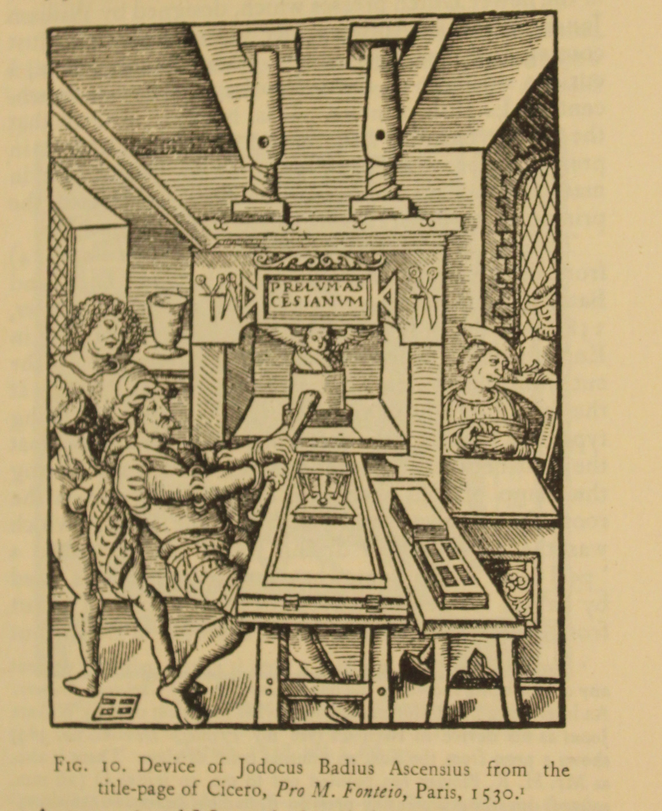
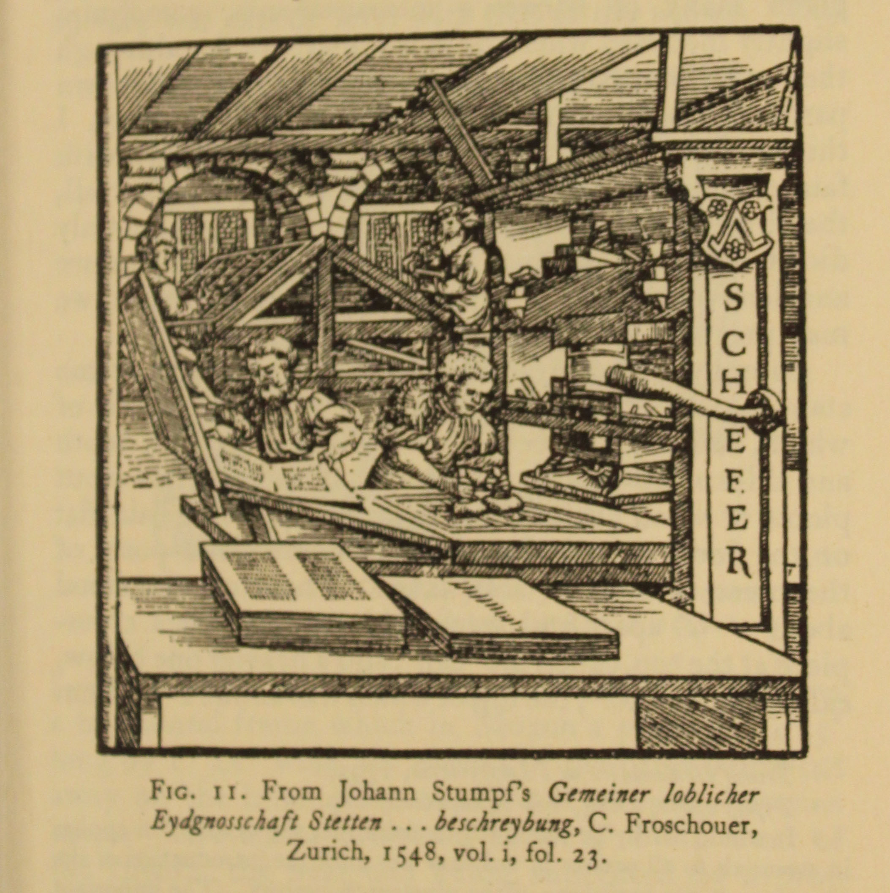
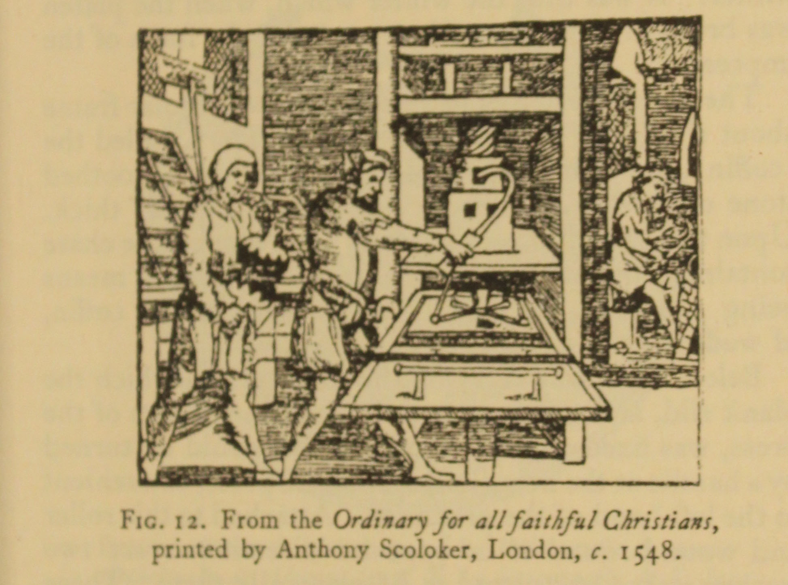
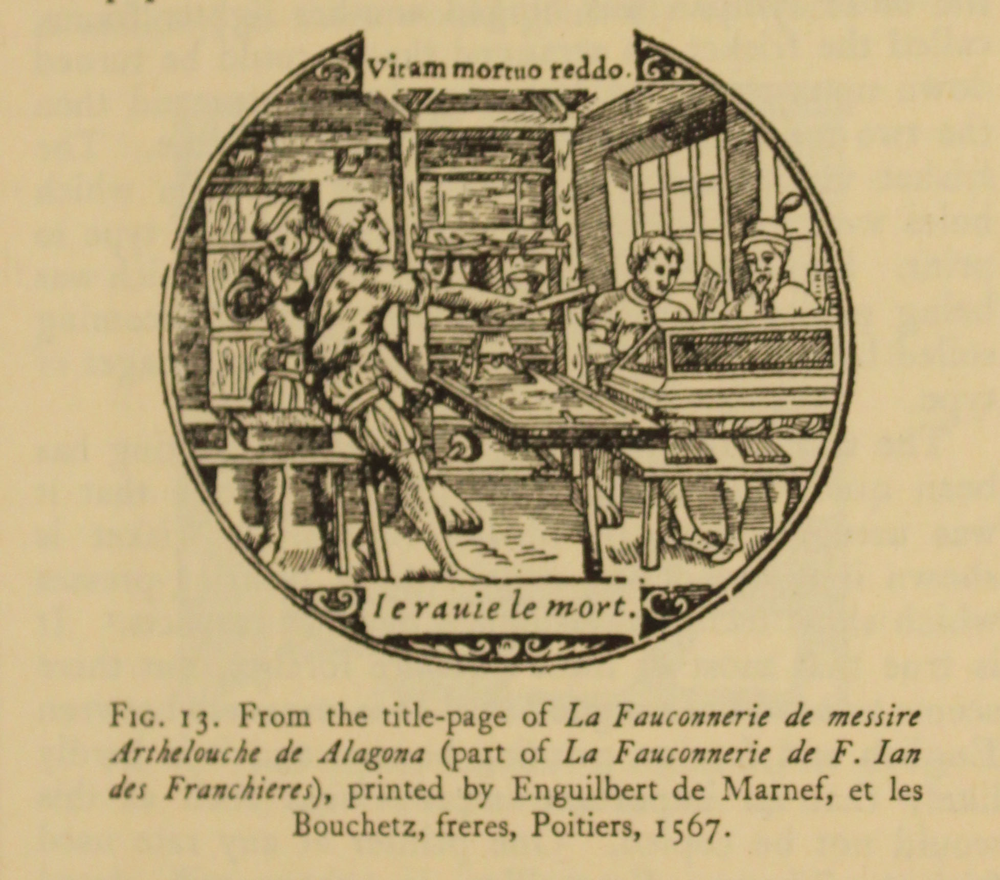
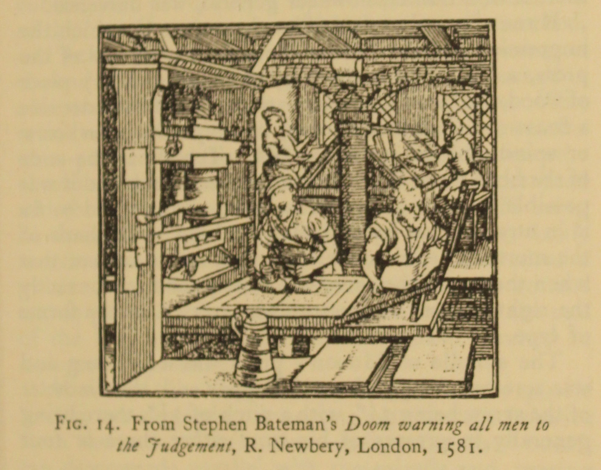
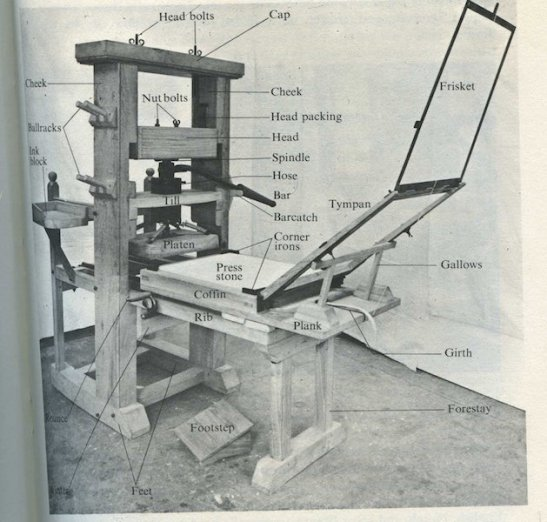

class: middle # The Early Printing Press <hr> ### Matthew J. Lavin ### Clinical Assistant Professor of English and Director of Digital Media Lab ### University of Pittsburgh ### October 2017 --- class: middle <hr> ### "All improvements in presses before the Stanhope press of 1800, were in matters of detail alone, and in no way affected the principles or general construction of the machine " (McKerrow 40) <hr> --- class: middle <hr> ### "[My description of the press] is, I believe, in general correct for the later part of the sixteenth century, and the whole of the seventeenth" (McKerrow 42) <hr> --- class: middle <hr> ### "the press consisted of an upright frame standing about six feet high," with two side pieces called cheeks, and a crosspiece at the top called a cap (McKerrow 42) <hr> --- class: middle <hr> ### Two "stout, wodden ribs" bearing iron rails ran lengthwise on the frame, and the plank moved along these rails (McKerrow 42) <hr> --- class: middle <hr> ### The plank "could be slid in out out between the cheeks of the press on the rails" (McKerrow 44) <hr> --- class: middle <hr>  <hr> --- class: middle <hr>  <hr> --- class: middle <hr>  <hr> --- class: middle <hr>  <hr> --- class: middle <hr>  <hr> --- class: middle <hr>  <hr>